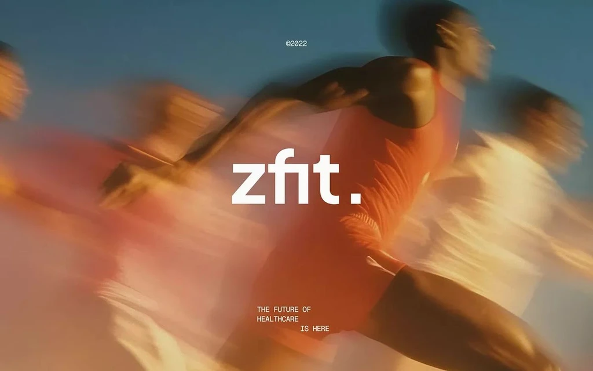

We are a design studiobased in Denver.
We are a design studio based in Denver, focused on crafting thoughtful, high-quality digital experiences. Our work centers around UX design and photography, where we prioritize clarity, usability, and purposeful interaction in every product we build. We combine strong design fundamentals with emerging technologies, including AI, to create adaptive and forward-thinking solutions that evolve with user needs.
Our approach is rooted in precision and intention. Every detail, from structure to visual identity, is carefully considered to ensure our work not only looks refined but performs seamlessly. We collaborate closely with our clients to understand their goals, translating ideas into scalable, impactful products.
Our Work
WE CREATE HUMAN-DRIVEN DESIGN THAT GOES BEYOND AESTHETICS. EVERY SOLUTION IS TAILORED TO THE BRAND, BUILT TO PERFORM, AND DESIGNED WITH INTENTION.
EXPLORE OUR NEWS FOR INSIGHTS, PROCESS NOTES, AND STORIES FROM THE PROJECTS WE BUILD.

DETOY CEO
The CEO of Detoy shares how AI can be used not to replace creativity, but to enhance it—helping designers build more human, intentional, and emotionally resonant products.

zfit.
A new era of fitness is emerging—one driven by design, where performance, aesthetics, and human experience come together to create something more meaningful than just results.
We need help!
We’re looking for talented, driven individuals who care about design, innovation, and impact—people who want to help us build the next generation of thoughtful products.